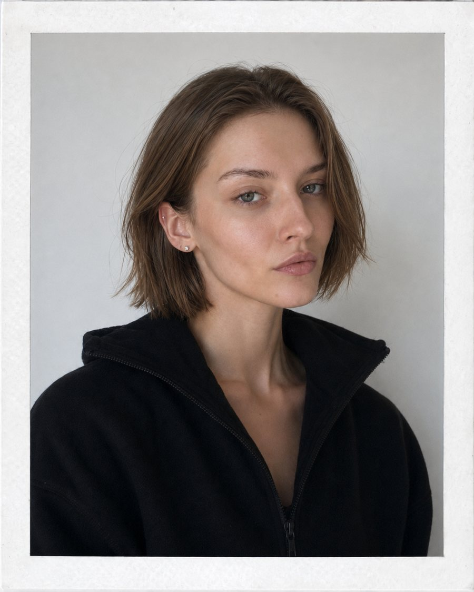

Портфолио
Редактор и автор текстов
Работаю в издательском доме «Комсомольская правда» редактором и менеджером проектов

Как редактор отвечаю за текст. Проверяю смысловые нестыковки и юридические риски, снимаю всё, что не должно попасть в тираж. Для большинства книг я написала или доработала аннотации и тексты обложек. Как менеджер проектов слежу за тем, чтобы книга вышла в срок. Курирую практически весь портфель издательства, ищу новых авторов и договариваюсь с ними о будущих проектах.
Одновременно веду 10–15 книг на разных стадиях. У каждой свой производственный план, куда входят авторский договор, редактура, вёрстка, корректура, подбор иллюстраций и типография. Над книгой работают редакторы, дизайнеры, корректоры и бильд-редакторы. Собрать их всех в один график не менее важно, чем вычитать сам текст.
Учусь на филологическом факультете РУДН по направлению «журналистика» с 2024 года. В январе 2026 как главный редактор выпустила университетскую газету «En Bref», её полосы есть в кейсах.
Шесть изданий из портфеля. Задачи в них по большей части одни и те же. Сначала литературная редактура рукописи, структура и стиль, подготовка текста к вёрстке, потом название, подзаголовок, аннотация и выносы для обложки. Где-то на мне была вся книга, где-то только обложка.
Вела книгу целиком. Редактура рукописи, структура, стиль, подготовка текста к вёрстке. Для обложки разработала название, подзаголовок, аннотацию и выносы. Стартовый тираж — 3000 экземпляров; книга стала бестселлером издательства и получила две допечатки (совокупный тираж — 5000).
Сделала литературную редактуру рукописи, выстроила структуру и стиль, подготовила текст к вёрстке. Для обложки придумала название, подзаголовок и выносы, а аннотацию написала от лица автора.
Литературная редактура рукописи и подготовка текста к вёрстке; подбор стихов поэта под замысел книги; разработка названия, аннотации и выносов.
Литературная редактура рукописи потребовала глубокой переработки текста, от структуры до языка, при сохранении авторского замысла и голоса. Для обложки разработала название, подзаголовок, аннотацию и выносы.
Третья книга автора бестселлеров «Книга вдохновения» и «Романтика дачи». Важно было сохранить узнаваемый почерк серии и одновременно показать, чем именно эта книга отличается от предыдущих. Разработала текст аннотации для задней обложки. Название, подзаголовок и текст у корешка утверждены издательством до подключения к проекту.
Для университетской газеты «En Bref» разобрала три фигуры, определившие язык моды на десятилетия вперёд, и провела линию от их архивных коллекций к сегодняшнему подиуму.